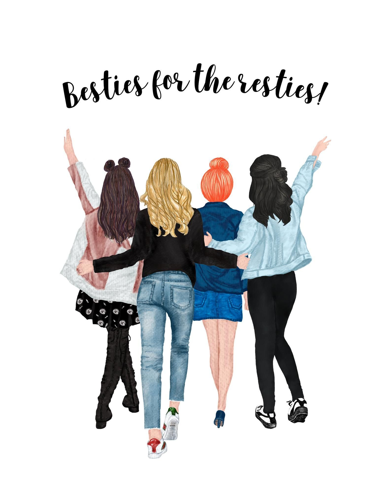

float the image to the right:
 College life is a life of freedom. There is no fear of teachers. The teachers behave in a friendly manner. The students feel no compulsion in studies. They develop a sense of duty and study. They may go to the library or canteen or playground in spare time. They may move with friends of their own choice. They develop self-confidence. They realize self-importance. They learn good manners. They dream of becoming officers after studies.